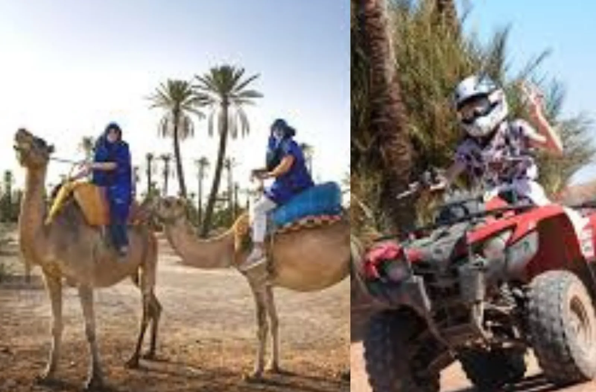
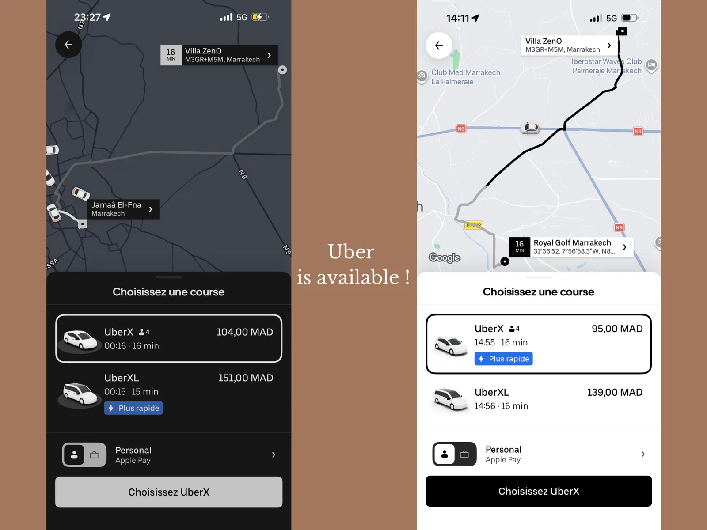

Piscine 18 mÀ débordement, extérieure, toute l’année. Chauffage : 90 €/jour, à confirmer 48 h à l’avance.

Palmeraie · Marrakech · Maroc
Villa Zen’O
Vue sur l’Atlas · Architecture contemporaine et tradition marocaine ·
- 8 voyageurs
- 4 chambres
- 5 lits
- 4,5 salles de bain
- Piscine 18 m
- Jacuzzi 8 pers.
La maison
Un refuge discret au cœur des palmiers, l’Atlas en toile de fond
Pour arriver à la Villa Zen'O, vous traversez la palmeraie de Marrakech. Dès l’entrée, un jardin de cactus s’ouvre sur une piscine à débordement, et derrière elle les montagnes de l’Atlas.
L’architecture marie des lignes contemporaines à la tradition marocaine : espace de vie décloisonné, hauteur sous plafond et baies vitrées pour une sensation « in & out ».
Chaque chambre s’organise autour d’un olivier centenaire, avec salle de bain privative et une vue côté piscine ou oliveraie.
La maison est pensée pour les familles et les groupes d’amis (8 voyageurs maximum). Elle est de plain-pied, avec lit bébé, chaise haute, des jeux, et un personnel discret.
Le nom est un clin d’œil à Dragon Ball Z : une statue de Sangoku veille dans le jardin.
Une piscine à débordement de 18 mètres
Zones peu profondes pour barboter et plus de profondeur pour nager. Privée, extérieure, ouverte toute l’année.
Un jacuzzi sous les étoiles
Le bain à remous extérieur accueille 8 personnes, toute l’année, jour et nuit.
Le chauffage de la piscine est proposé à 90 € par jour, celui du jacuzzi à 35 € par jour. Merci de confirmer au moins 48 heures avant l’arrivée.
Quatre chambres nommées


À table
La cuisine de Mama Fouzia

Le confort
Tout ce qu’il faut, sans quitter le jardin
Jacuzzi 8 pers.Extérieur, toute l’année. Chauffage : 35 €/jour, à confirmer 48 h à l’avance.
4 chambresThe Sand Master, The Palm Suite, The Atlas Suite et The Blue Desert Suite, chacune avec salle de bain privative.
Wifi fibreInclus. Identifiants remis à l’arrivée.
Cuisine & BBQCuisine équipée, cuisine extérieure privée et ustensiles de barbecue.
LoisirsPS5, baby-foot, ping-pong et jeux de société.
FamillesLit bébé, chaise haute, vaisselle enfants, livres et jouets.
Plain-piedAccès de plain-pied, entrée large, stationnement PMR.
Parking gratuitStationnement gratuit sur place.
ClimatisationClimatisation centrale et chauffage.
CheminéeCheminée au bois dans l’espace de vie.
FitnessPoids, haltères et tapis de yoga.
Accès de plain-pied, chemin bien éclairé, largeur d’entrée supérieure à 81 cm, stationnement PMR (informations fournies par l’hôte sur Airbnb).
Une équipe dédiée
Nos services
La cuisine de Mama Fouzia
Petits-déjeuners, déjeuners et dîners aux tarifs ci-dessus — ou elle cuisine les courses que vous achetez, sans frais de prestation en plus.
Chauffeur privé et transferts aéroport
Nous vous mettons en relation avec un chauffeur de confiance : transfert aéroport, courses à la demande et mise à disposition à la journée.

Quad, dromadaire et cheval dès la porte
Dromadaire 200 MAD/h et quad 300 MAD/h (+50 MAD à deux), depuis la villa. Un club équestre propose aussi des sorties au départ de la maison. À confirmer la veille auprès du gardien.

Massage et soins à la villa
Soins esthétiques et massages peuvent être organisés à domicile avec notre partenaire.

Conseils d’initiés pour la médina
Nous partageons nos adresses : restaurants, circuit sur Jemaa El-Fna et activités.
Ménage, sécurité et courses
Ménage quotidien, sécurité discrète 24h/24, et courses ou livraisons à 10 € (9h–21h). Pas de livraison d’alcool.
Se déplacer
Jemaa El-Fna en 16 minutes en Uber
La villa se trouve dans la Palmeraie, entre le Palais Namaskar et le Palais Ronsard, près de l’Oberoi et du Palais Rhoul. La carte utilise le plus code M3GR+M5M (Marrakech) comme repère — le détail d’accès est communiqué après réservation.
Afficher une carte plus grande · OpenStreetMap · M3GR+M5M

Depuis la porte
- Balades à cheval
- Balades à dromadaire (200 MAD/h)
- Sorties en quad (300 MAD/h)
À proximité
- Golf et tennis
- Tajines et couscous à environ 5 minutes en voiture
- McDonald’s à environ 10 minutes
L’essentiel
- Une épicerie à environ 2 minutes en voiture
- Le supermarché Atacadao à environ 7 minutes
- Transferts aéroport sur demande
Informations pratiques
Règles de la maison
À partir de 15h00 — arrivée autonome, avec le personnel de la propriété.
Avant 11h00.
8 voyageurs maximum. Pas d’invité non prévu au contrat.
Pas de musique forte ni de fête de minuit à 8h00.
Sous la seule responsabilité de leurs parents, y compris autour de la piscine et du jacuzzi.
Bleues pour la piscine, blanches à l’intérieur.
Questions fréquentes
Combien de voyageurs peut accueillir la villa ?
Villa Zen'O accueille jusqu'à 8 voyageurs, dans 4 chambres et 5 lits, avec 4 salles de bain et 1 toilette séparée.
Comment s'appellent les quatre chambres ?
The Sand Master (avec bureau), The Palm Suite, The Atlas Suite (lits jumeaux) et The Blue Desert Suite. Chaque chambre a sa salle de bain privative.
La piscine et le jacuzzi sont-ils chauffés ?
Ils peuvent l'être, en supplément : 90 € par jour pour la piscine et 35 € par jour pour le jacuzzi. Merci de confirmer au moins 48 heures à l'avance. Sans chauffage, ils restent disponibles toute l'année.
Quels services sont inclus dans le séjour ?
Le ménage quotidien, une femme de ménage et une cuisinière présentes de 9h00 à 17h00, le nettoyage de la piscine, la sécurité 24h/24, le jardinage, le wifi, les serviettes de bain et de piscine, le gel douche, le shampoing, l'équipement de cuisine et la table de ping-pong.
Combien coûtent les repas préparés par Mama Fouzia ?
Petit-déjeuner (9h–12h) : 10 € par personne. Déjeuner (12h–16h) : 15 € par personne. Dîner (19h–21h) : 20 € par personne. Merci de prévenir la veille. Vous pouvez aussi acheter les courses : Mama Fouzia cuisine alors sans frais de prestation supplémentaires. Un déjeuner ou dîner comprend une salade, un plat et un dessert.
Comment fonctionnent les courses et livraisons ?
Les livraisons sont possibles de 9h00 à 21h00, à 10 € par course. Merci de prévenir la veille pour s'organiser. La livraison d'alcool n'est pas possible.
Quels sont les horaires d'arrivée et de départ ?
Arrivée à partir de 15h00, départ avant 11h00. Arrivée autonome, avec le personnel de la propriété.
À quelle distance se trouve Jemaa El-Fna ?
Un trajet Uber réel depuis la villa (plus code M3GR+M5M, Marrakech) jusqu'à Jemaa El-Fna a pris 16 minutes, à 104 MAD en UberX et 151 MAD en UberXL (soirée). Royal Golf Marrakech est également à 16 minutes (95 MAD UberX / 139 MAD UberXL sur le même relevé). Les durées et tarifs varient selon l'heure et le trafic.
La villa convient-elle aux familles et aux enfants ?
Oui : maison de plain-pied, lit bébé, chaise haute, vaisselle enfants, jeux (PS5, baby-foot, ping-pong) et une piscine avec zones peu profondes. Les enfants restent sous la seule responsabilité de leurs parents ; la villa décline toute responsabilité en cas d'accident à l'intérieur, à l'extérieur, dans la piscine ou le jacuzzi.
Peut-on organiser une fête ou inviter des personnes extérieures ?
Pas de musique forte ni de fête entre minuit et 8h00, par respect du voisinage. Les personnes non prévues dans le contrat de réservation ne sont pas autorisées.
Quelles sont les règles pour les serviettes et les coussins ?
Les serviettes bleues sont réservées à la piscine ; les blanches restent à l'intérieur de la maison. Merci de ne pas mettre les coussins des salons ou des transats dans la piscine ou le jacuzzi : des frais peuvent s'appliquer. Le linge de maison (draps et serviettes) peut être changé à la demande pendant le séjour.
Que se passe-t-il en cas de perte de clé ou de détérioration ?
La perte d'une clé ou d'un badge entraîne des frais de 120 €. Un forfait de 50 € s'applique en cas de détérioration des rideaux du salon et de la salle à manger.
Un coffre-fort est-il à disposition ?
Oui. En revanche, la villa décline toute responsabilité en cas de perte ou de vol à l'intérieur du coffre-fort : les documents et objets qui y sont déposés restent sous l'entière responsabilité du client.
Y a-t-il le wifi ?
Oui, une connexion wifi fibre est incluse dans le séjour. Les identifiants vous sont communiqués à l'arrivée, dans le livret d'accueil.
Peut-on faire du quad ou une balade à dos de dromadaire ?
Oui, depuis la villa. Quad : 300 MAD pour une heure (50 MAD de plus à deux sur le même quad). Dromadaire : 200 MAD pour une heure (50 MAD de plus à deux). Il faut confirmer la veille auprès du gardien. La balade à dromadaire commence à la porte de la villa ; selon la période et l'horaire, le quad aussi. Un club équestre propose également des sorties au départ de la villa.
Comment réserver ?
Via Airbnb ou Booking.com pour voir les tarifs et disponibilités à jour, ou par WhatsApp pour poser une question.
Pourquoi le nom Zen'O ?
C'est une référence à Dragon Ball Z. Une statue de Sangoku (Son Goku) se trouve dans le jardin.